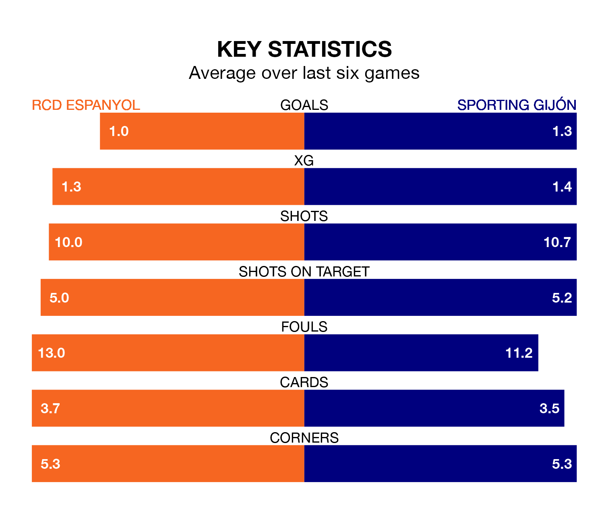

RCD Espanyol face Sporting Gijón on Sunday seeking to protect their formidable unbeaten run in the Segunda División.
Espanyol are unbeaten in 11, with four wins and seven draws, ahead of the 3.15pm kick-off.
They face a Sporting team who have won four and drawn one over the same number of games.
With 54 goals in 37 games so far this season, Espanyol are the league's third-highest scorers with 1.5 goals per game. And they are conceding at an average rate, letting in 39 goals at a rate of 1.1 per game.
Sporting are also above average scorers, with 1.2 goals per game, compared to a league average of 1.1. They have conceded 1.0 goal per game.
In Martin Braithwaite, the hosts have the league's sharpest shooter so far this season. He has notched 20 goals in 34 appearances.
His goal rate of one every 144 minutes is quicker than that of Gaspar Campos Ansó Fernández, the away team's top scorer with a goal every 251 minutes, and a total of 10 goals in 35 games.
In the last 10 years, Espanyol and Sporting have played each other on seven occasions. Espanyol won three of them, Sporting two, and they drew twice.
On average, Espanyol scored 1.6 goals and Sporting 1.3 in those matches.
Their last meeting was on October 28, when Sporting won 2-0 at home.
Espanyol are fourth in the table after 37 games, of which they have won 15 and drawn 15, earning 60 points.
Sporting are three places behind Espanyol in seventh, with 15 wins and 10 draws putting them on 55 points.
Espanyol's last match was on April 27, a 2-2 draw against Elche CF, with Braithwaite and Javi Puado getting the goals for Espanyol.
Sporting lost 3-0 against Villarreal B last time out, on April 28.
Updated: 12:00 (UTC), 02/05/24